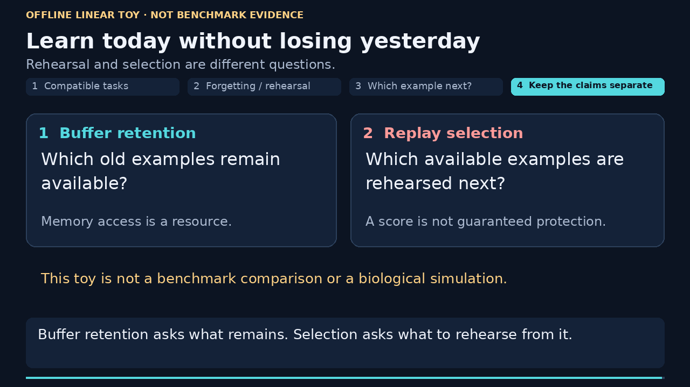

Learn today without losing yesterday
OFFLINE LINEAR TOY · NOT BENCHMARK EVIDENCE
24 seconds, no audio. Nothing plays automatically. The static poster and complete text are the reduced-motion path.

Download MP4 · Optional animated GIF · Static PNG · Plain-text transcript · Captions
Complete transcript and visual description
00–06s: Compatible tasks
The linear prediction is w1*x1+w2*x2. Task A has input (1,0), target 1; B has input (1,1), target 0. The shared solution (1,-1) fits both. Learning only A reaches approximately (1,0).
06–12s: Forgetting / rehearsal
From the learned-A state, 120 updates containing B twice approach (0.5,-0.5). A predicts 0.5 and B predicts 0. Replacing one B presentation with stored A approaches (0.999,-0.998), retaining both. Each later condition has 240 example presentations, but replay stores one old example and uses fewer B presentations. Values come from the offline demo, not image benchmarks.
12–18s: Which example next?
At weights (1,0), a hypothetical B step gives (0.75,-0.25). Current half-squared losses for old anchor, hard-now and threatened-next examples are 0, 0.5 and 0. Signed loss changes are +0.03125, -0.21875 and +0.125. High-loss selects hard-now; predicted-interference selects threatened-next. Uniform selection gives one-third to each. This is a scoring distinction, not a full MIR implementation or evidence that either selection improves a real model.
18–24s: Keep the claims separate
One toy demonstrates forgetting and possible protection; another illustrates different replay scores. Neither establishes a benchmark advantage, biological fidelity, an optimal selector or guaranteed protection. Read the repository's controlled studies separately.